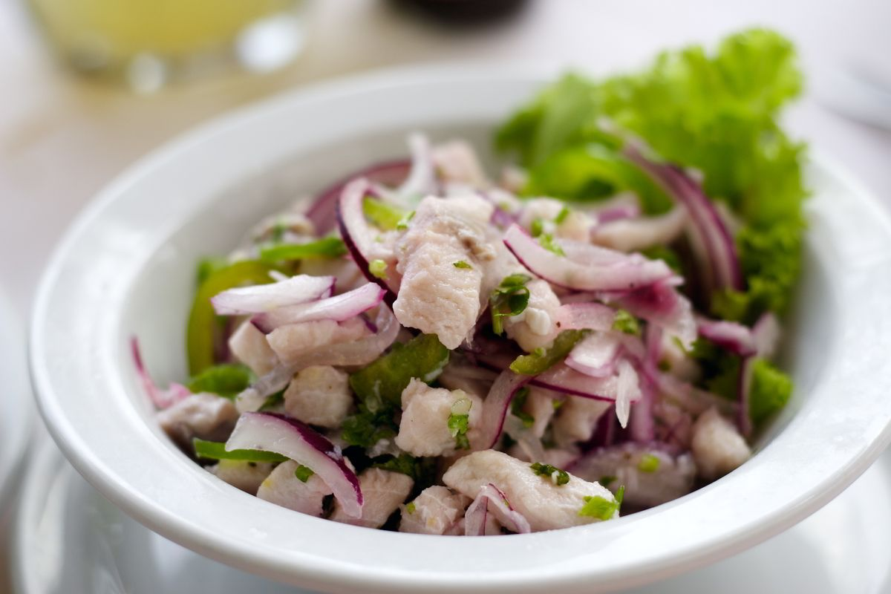

Ceviche

Description
Ceviche is a classic peruvian recipe that's great for the summertime
It's fresh, it's spicy, it's sour and overall very tasty
Ingredients
- 250g fresh ocean fish
- 100ml lemon, lime or sour orange juice, or a combination
- 1 small red onion, finely slice
- 100g chopped fresh cilantro leaves
- 1 to 2 jalapeño peppers, ribs and seeds removed, rinsed, and finely minced
- Salt and freshly ground black pepper
Instructions
- Combine fish, juice, onion, cilantro and jalapeño in a large bowl
- Gently fold all ingredients with hands to combine
- Season with salt and pepper to tase
- Allow to marinate for at least 5 minutes, folding occasionally
- Serve and enjoy!
Go back home
Recipe Source (Serious Eats)